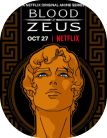
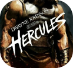
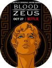
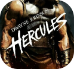

Quem é Zeus?
- Deus do Olimpo
- Marido de Hera
- Filho de Cronos e Réia
- Irmão dos poderosos Poseidon e Hades
Zeus:
conheça a história de Zeus->

Zeus possui uma história um tanto quanto conturbada. Filho de Cronos e Réia, irmão de Héstia, Deméter, Hades, Poseidon e Hera, Zeus nasceu com a missão de destronar o próprio pai!
Ele foi o sexto e último filho do casal e foi o escolhido para salvar seus irmãos que eram comidos por Cronos quando nasciam. Sua mãe o escondeu de seu pai para que não tivesse o mesmo fim dos outros filhos e o deixou na ilha de Creta para que fosse criado com a avó, Gaia.
Nessa ilha, Zeus foi treinado por Métis (deusa da saúde e seu primeiro amor), para cumprir sua missão de destronar seu pai. Durante seu treinamento, seus tios (os hecaroncteros) fizeram para ele uma arma extremamente poderosa: seus famosos raios!
A batalha contra Cronos ficou conhecida como Guerra dos Titãs e durou 10.000 anos, resultando na vitória de Zeus, Poseidon, Hades e seus tios hecaroncteros (digamos que ter a deusa da vitória, Nike, em seu time também tenha ajudado).
Ao fim da batalha, Zeus abriu o chão e mandou Cronos e Kratos para o submundo e obrigou Atlas a carregar o mundo em suas costas. Já os vitoriosos, fizeram um sorteio (muito roubado) para decidir quem comandaria os 3 “pontos” da Terra: os mares, Poseidon, o subdmundo, Hades e o poderoso Zeus comandou o grande OLIMPO!
Zeus, agora Deus do Olimpo, se casou com sua irmã, Hera, e com ela teve 4 filhos: Ares, deus da guerra; Hefesto, deus da metalurgia; Hebe, deusa da juventude; Hermes, deus da comunicação. Porém ele nunca foi um marido muito fiel e teve muitos filhos fora do casamento, como: Atena, deusa da sabedoria; Dionísio (semideus), deus do vinho; Hércules (mortal) e muitos outros.
 



Personagens relacionados:
- Gaia e Urano (Avó e avô);
- Réia e Cronos (Mãe e pai);
- Métis (primeiro amor);
- Héra (esposa);
- Héstia, Deméter e Hera (Irmãs);
- Poseidon e Hades (Irmãos);